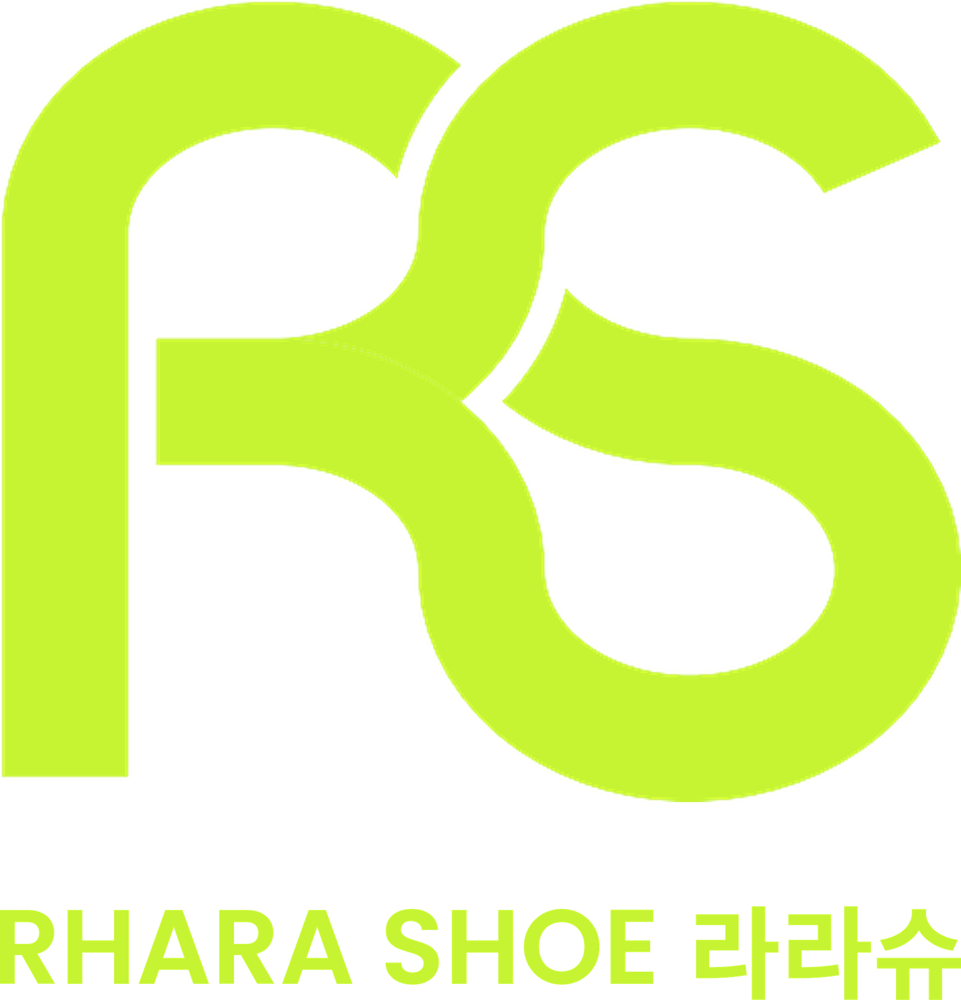

쿼드그립 아치가득 인솔
오후 4시,
발이 먼저
퇴근하고 싶을 때.
식당·카페처럼 오래 서서 일하는 분들의
쓰던 신발에, 한 장 더.
목공소 우드칩
배합 소재
뒤꿈치를 감싸는
링 컵 구조
MADE IN KOREA
국내 제조
아치 라인을
따라 채운 형태
쓰던 깔창 밑에
한 장 더
가지고 계신
신발에 쏙
이미지는 AI로 연출한 장면입니다 · 실제 제품 색상은 그레이 · 의료기기가 아닙니다
RHARA SHOE 라라슈 · 2026.11.11 OPEN